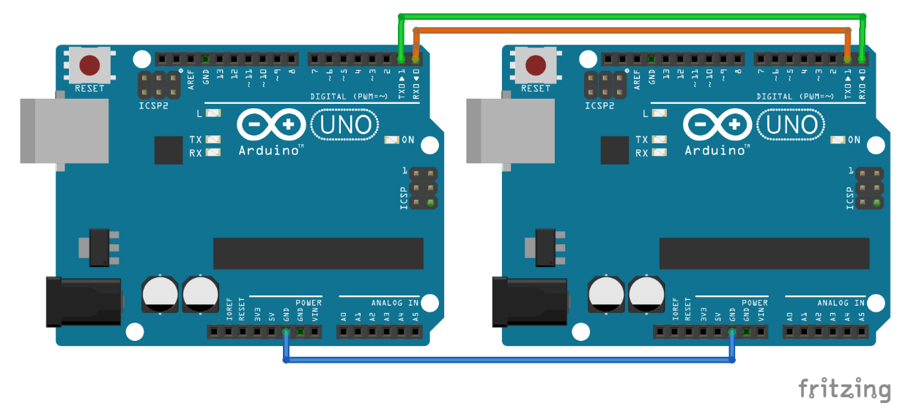

Arduino Circuit for Hello Tutorial

Code for the Transmitter
Code for the Receiver
Serial monitor prints of "Hello Received"

Using Radio Communication to Light a Bulb!
Using the nRF24L01+ transceiver module, I was able to make the Uno boards communicate with each other wirelessly. The module is designed to operate in 2.4 GHz worldwide ISM (Industrial, Scientific, and Medical) frequency band, which is one of the bands reserved internationally for the use of unlicensed low-powered devices, and uses GFSK modulation for data transmission.
The operating voltage is from 1.9-3.6V but the logic pins are 5V tolerant, so it can be connected to the Uno without any converter. They are the most common modules used because of their low current draw (26 microamps in standby mode and 900 nanoamps at power down mode).
The transciever module communicate over a 4-pin SPI. The SPI bus uses a concept of a Master and Slave. In this exmaple, the Arduino is the Master and the radio module is the slave. This module uses an on-board antenna that allows for a more compact version of the breakout. The smaller antenna means a lower transmission range, allowing for communication with over a 100 meters in distance (without walls...).

****I think a lot of credit probably goes to my friend Meghan for this idea. I am no owner of this and thank her wholeheartedly for saving me some time the night before.
Using this pinout diagram, I hooked up the module to the Uno board using male head wires to the following pins in order from left to right, top to bottom: 3.3V, digital 10, digital 11, (right one left empty); GND, digital 9, digital 13, and digital 12.
I then set this up in Arduino with the following code:
Transmitting Board Code
Transmitting Board
I wired up the module to the same I/O pins on both the transmitter and receiver boards
Receiving Board
As you can see in the code to the left, radio.begin(); initiated the radio module signal and radio.openWritingPipe(address) set up the address where the data was being sent. The radio.stopListening(); command set up the module as the transmitter and the radio.startListening(); set up the receiving module.
Receiving Board Code
Botton Wiring on the Sending Board
LED Wiring on the Receiving Board
Transmitting Board Loop
Using these loops, I then created two button states: one High and one Low. When the button was pressed (i.e. state=HIGH), the radio module would write this text and send it over to the receiver which would read the data with its radio module and determine which state the button was in with an if statement. This conditional, when true, would then turn the pin connected to the LED on HIGH if the button was pressed, thus allowing current to flow through the LED to light it up!
Receiving Board Loop
I wired up the module to the same I/O pins on both the transmitter and receiver boards

Let's Move!
Using the same steps in the previous activity, I made a button-operated servo motor that would rotate up to 120 degrees repeatedly.
When the button was pushed, the conditional on the receiving side would write to the servo motor, causing it to rotate. This was quite simple, especially after the much of the struggle involved in trying to figure out the code for the button-operated LED was in the past. This did, however, give me an idea to do the same with DC motors (say driving a tiny robot) that could be remotely operated. Maybe to bring me water. Or a snack. From the couch to the kitchen (yeah it's about to wind down to those times...).
Sending Board Code
Receiving Board Code